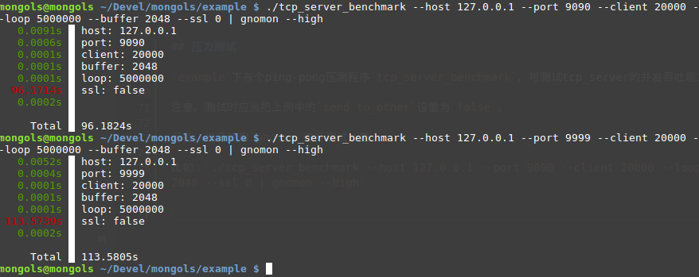

tcp 服务器
tcp 服务器由两个类组成，一个是tcp_server,另一个是它的子类tcp_threading_server。
先看代码：
#include <mongols/tcp_server.hpp>
#include <mongols/tcp_threading_server.hpp>
int main(int,char**)
{
auto f=[](const std::pair<char*,size_t>& input
, bool & keepalive
, bool& send_to_other
, mongols::tcp_server::client_t& client
, mongols::tcp_server::filter_handler_function& send_to_other_filter){
keepalive= KEEPALIVE_CONNECTION;
send_to_other=true;
return std::string(input.first,input.second);
};
int port=9090;
const char* host="127.0.0.1";
mongols::tcp_server
//mongols::tcp_threading_server
server(host,port);
server.run(f);
}
run方法需要一个handler函数，可以是lambda。这个函数给予开发者任意处置客户端及其输入和输出的自由。通过这个函数，开发者几乎可以完全控制服务器的每一次I/O。tcp 服务器是所有其他服务器的核心。
安全
黑名单机制
该机制无需手写ip黑名单，而是根据以下三个静态变量配置自动发现、更新恶意ip并及时拒绝它们:
- tcp_server::backlist_size，黑名单最大长度，默认1024
- tcp_server::max_connection_limit，单个ip每秒能够发送连接请求的最大数量，默认30
- tcp_server::backlist_timeout，被拒绝ip被认为存在恶意行为的过期时间，默认86400秒,即整整一天
该机制默认并未开启。如果需要，只需通过方法set_enable_blacklist设置true即可。
发送频率限制机制
该机制限制通过配置以下静态变量识别恶意行为：
- tcp_server::max_send_limit，每秒最大消息发送次数，默认5
该机制默认并未开启。如果需要，只需通过方法set_enable_security_check设置true即可。
长连接过期机制
该机制通过配置静态变量tcp_server::max_connection_keepalive，限制长连接过期时间，默认60秒。
压力测试
example下有个ping-pong压测程序tcp_server_benchmark，可测试tcp_server的并发吞吐能力。
注意，测试时应当把上例中的send_to_other设置为false，并且最大buffer值不应超过tcp_server的配置值，在上例中，是默认值8192——如果需要测试更大的buffer,则需加大tcp_server的buffer。
另外，推荐使用gnomon进行测试计量。
比如：./tcp_server_benchmark --host 127.0.0.1 --port 9090 --client 20000 --loop 5000000 --buffer 2048 --ssl 0 | gnomon --high
下图是与muduo的pingpong_server的压测比较图，mongols(单线程)在9090端口，muduo(4线程)在9999端口：

从耗时数值来看，mongols的优势并不明显。但是若结合CPU消耗和内存占用来看，则mongols的优势非常明显：
- CPU消耗: mongols < 28% , muduo > 54%
- 内存占用: mongols < 5MB, muduo > 60MB